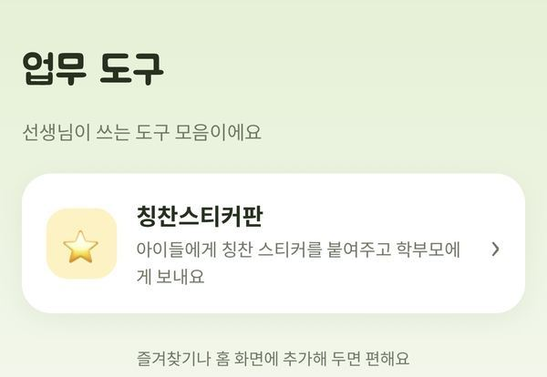
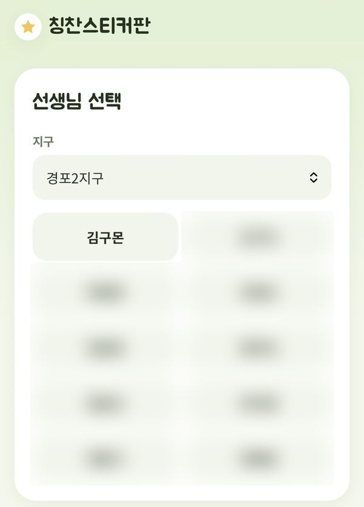
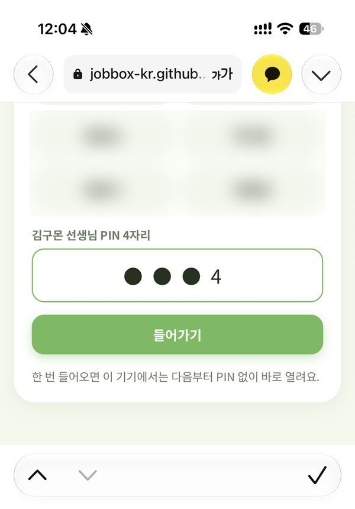
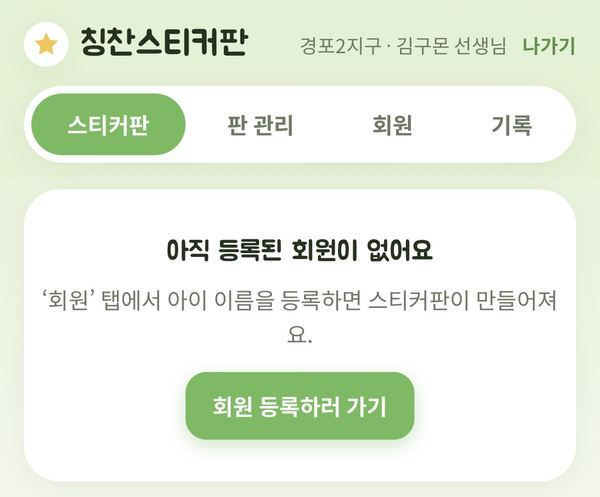
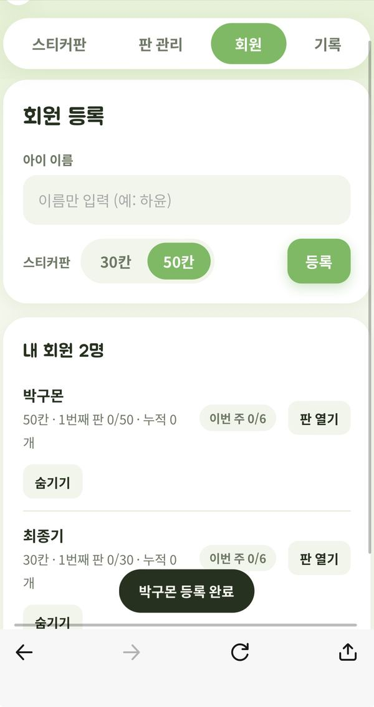
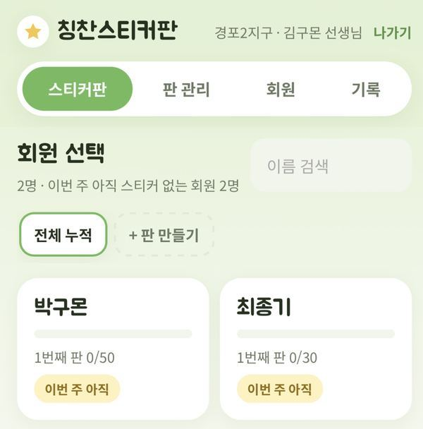
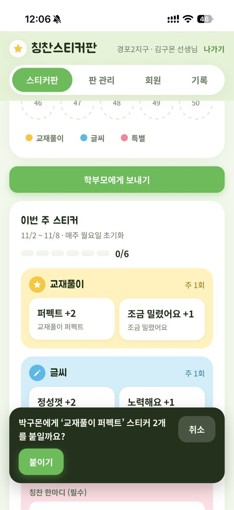
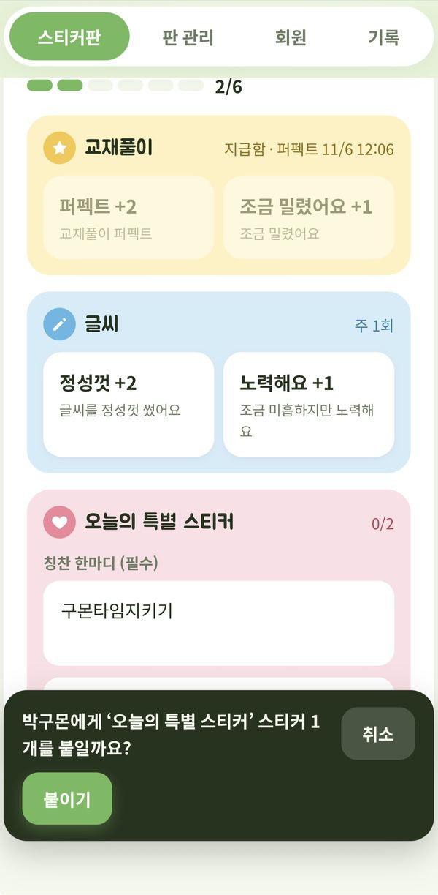
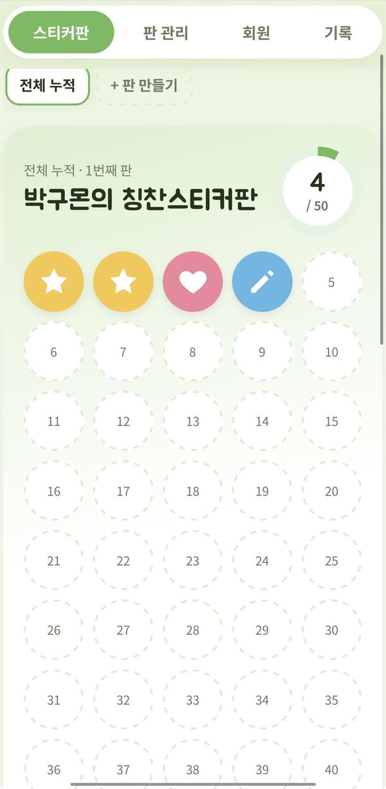
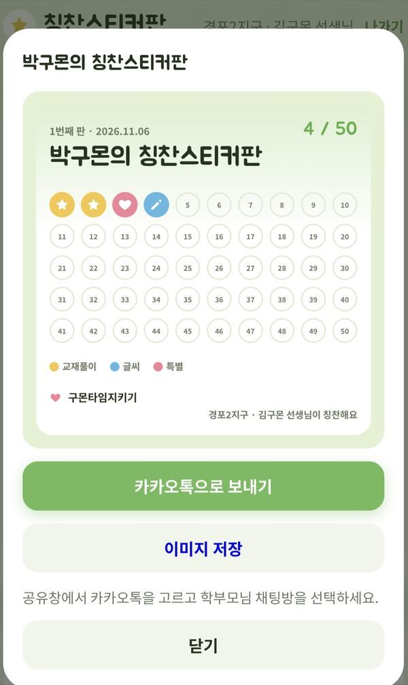

수업 때 직접 붙여주는 칭찬스티커
종이 스티커판 대신 패드에서 붙이고, 판 이미지를 학부모님께 카톡으로 보낼 수 있어요. 한 번 들어오면 다음부터는 바로 열려요.
jobbox-kr.github.io이 주소를 홈 화면에 추가해 두면 앱처럼 쓸 수 있어요1
처음 들어가기
- 안내받은 주소로 들어가서 칭찬스티커판을 눌러요.

- 지구를 고르고, 목록에서 내 이름을 눌러요.

- 관리자에게 받은 PIN 4자리를 넣고 들어가기를 눌러요.

한 번만 하면 돼요. 같은 패드에서는 다음부터 PIN 없이 바로 내 화면이 열려요. 기기를 바꿨을 때만 다시 PIN을 넣어요.
2
회원 등록하기
처음에는 회원이 없어서 아래 화면이 나와요. 회원 등록하러 가기나 위쪽 회원 탭을 눌러요.

- 아이 이름을 적어요. 이름만 적으면 돼요.
- 스티커판 크기 30칸 / 50칸 중에 골라요.
- 등록을 누르면 아래 내 회원 목록에 추가돼요.

퇴회한 아이는 숨기기를 누르면 목록에서 빠져요. 기록은 그대로 남고, 다시 보이게 할 수도 있어요.
3
스티커 붙여주기
- 스티커판 탭에서 스티커를 줄 아이 카드를 눌러요.

- 아래로 내려 이번 주 스티커에서 알맞은 버튼을 눌러요.
- 확인창이 뜨면 붙이기를 눌러요. 잘못 눌렀으면 취소.

스티커 주는 기준
교재풀이 · 주 1번
| 교재풀이 퍼펙트 | 2개 |
| 조금 밀렸어요 | 1개 |
글씨 · 주 1번
| 글씨를 정성껏 썼어요 | 2개 |
| 조금 미흡하지만 노력해요 | 1개 |
오늘의 특별 스티커 · 주 2번까지
| 칭찬 한마디를 꼭 적고 붙여요 | 1개씩 |
한 아이당 일주일에 최대 6개 · 매주 월요일에 새로 시작

미리 몰아서 붙일 수 없어요. 붙인 날짜와 시각이 자동으로 기록되고, 주마다 받을 수 있는 개수가 정해져 있어요. 수업할 때마다 그 주 몫을 붙여 주세요.
위로 올리면 붙인 스티커가 판에 채워진 게 보여요. 오른쪽 동그라미는 지금까지 모은 개수예요. 판이 다 차면 다음 판이 자동으로 시작돼요.

4
학부모님께 보내기
- 아이 스티커판 아래 학부모에게 보내기를 눌러요.
- 스티커판 이미지가 만들어지면 카카오톡으로 보내기를 눌러요.
- 공유창에서 카카오톡 → 학부모님 채팅방을 골라 보내요.

공유창이 안 뜨면 이미지 저장을 누른 뒤, 카카오톡에서 사진으로 보내요. 저장도 안 되면 이미지를 길게 눌러 저장해요.
5
더 알아보기
- 회원 목록 이동: 아이 판 위쪽 ← 회원 목록, 또는 ‹ 이전 아이 / 다음 아이 ›로 바로 넘어가요.
- 판 관리: 아이와 따로 약속한 기간이 있으면 (예: 10~11월) 기간을 정해 판을 만들 수 있어요. 스티커판 위쪽에서 전체 누적과 내 판을 골라 봐요.
- 지국·지구 행사: 행사가 열리면 스티커판 위쪽에 행사 버튼이 생겨요. 누르면 행사 기간에 붙인 스티커만 따로 보여요. 판이 모자라면 + 스티커판 추가를 눌러요.
- 기록 탭: 붙인 내역을 날짜순으로 볼 수 있고, 잘못 붙인 스티커는 취소할 수 있어요.
‘나가기’는 누르지 않아도 돼요. 누르면 이 기기에서 다시 PIN을 넣어야 해요. 다른 선생님과 패드를 같이 쓸 때만 눌러 주세요.
?
자주 묻는 질문
PIN을 잊어버렸어요
관리자에게 말씀하시면 새 PIN으로 바꿔 드려요.
스티커 버튼이 흐리게 눌리지 않아요
그 주에 이미 받은 항목이거나, 이번 주 6개를 다 받은 경우예요. 다음 주 월요일에 다시 열려요.
잘못 붙였어요
기록 탭에서 해당 스티커의 취소를 누르고 다시 붙이면 돼요. 취소한 내역도 기록에 남아요.
다른 패드에서 들어가고 싶어요
같은 주소로 들어가서 지구 → 이름 → PIN을 한 번만 넣으면 돼요. 붙인 스티커는 그대로 보여요.
홈 화면에 추가하는 방법
아이폰·아이패드: 사파리 공유 버튼 → 홈 화면에 추가. 갤럭시: 크롬 메뉴(⋮) → 홈 화면에 추가.
궁금한 점은 관리자에게 문의해 주세요.